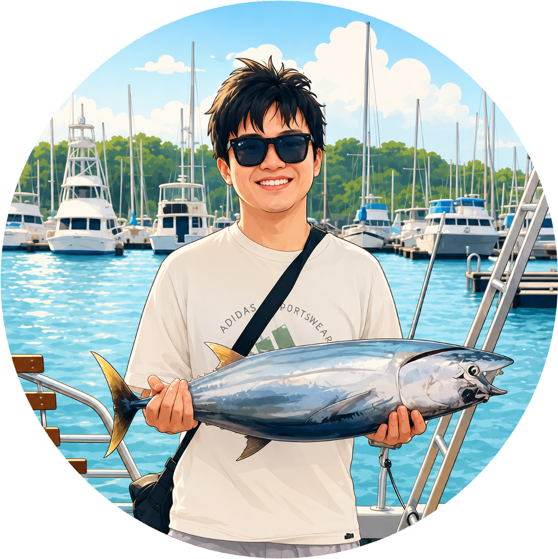
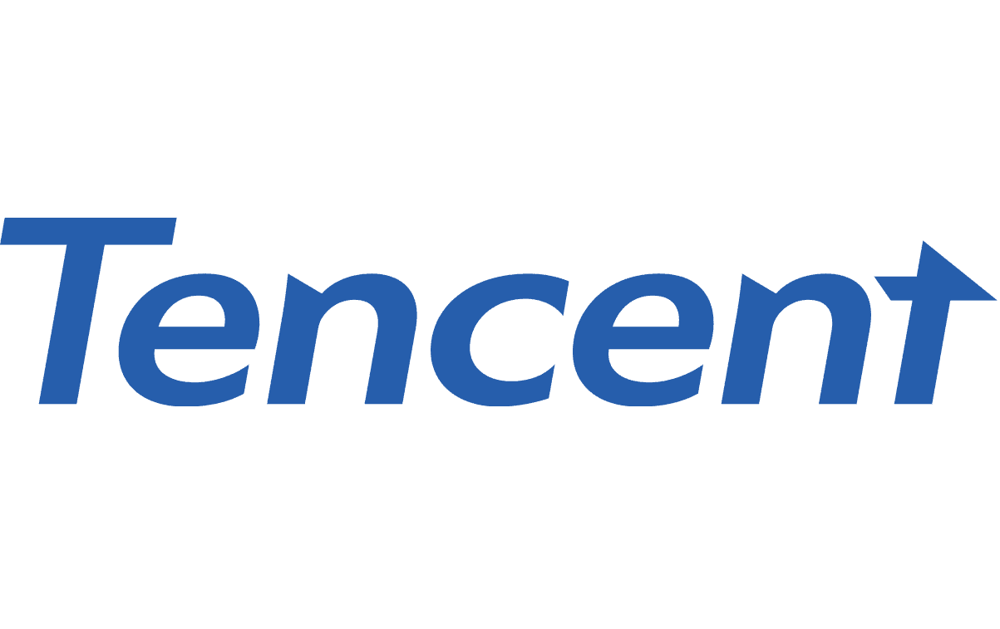

Zesong Yang 杨泽松
I am a third-year Ph.D. student at the ZJU3DV group of State Key Lab of CAD&CG, Zhejiang University, supervised by Prof. Zhaopeng Cui. I am also a research intern at LightSpeed Studios, Tencent, under the Qingyun Program, where I work with Weikai Chen. Before that, I received my Bachelor's degree at Southeast University (Seq 2019 - June 2023).
My research interests focus on simulation-ready 3D reconstruction, physical animation, and 3D-controllable generation. I received my Bachelor's degree from Southeast University in June 2023. I am open to collaborations; please feel free to email me if you are interested in my research.
Experiences

Selected Publications
Please refer to Google Scholar for the full publication list.
Open-Source
Large-scale NeRF Reconstruction
State-of-the-art, simple, fast unbounded / large-scale NeRFs.
Core contributor to the first open-source city-scale NeRF-based street-view reconstruction framework.
Awards
Best Graduation Thesis, Southeast University
2023National Scholarship, Southeast University
2021